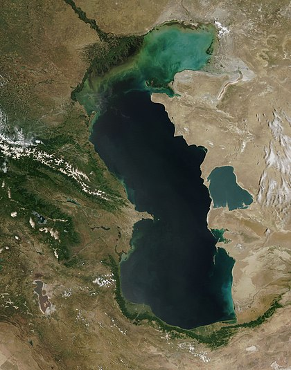

Xəzər dənizi (qaz. Каспий теңізі, rus. Каспийское море, türkm. deňzi, fars. دریای خزر) — Yer kürəsində ən böyük axmaz göl. Avropa və Asiyanın kəsişməsində yerləşir. Dibində okean tipli yer qatı yerləşdiyinə və dəniz ölçülərinə malik olduğuna görə dəniz adlanır. Suyun səviyyəsi dəyişkəndir, hazırda o okean səviyyəsindən təqribən –28 metr aşağıdır. Xəzər dənizi dünyanın ən böyük su hövzəsidir və dünya göl sularının 44%-ni təşkil edir. Səviyyə tərəddüdündən asılı olaraq (10-20 %) dəyişməyə məruz qalır və orta hesabla 370 min km2 sahəni əhatə edir. Uzunluğu təqribən 1200 km, maksimal eni 466 km, minimum eni isə 204 km-dir. Xəzər dənizinin sahil xəttinin uzunluğu təqribən 6380 km-dir ki, onun da 825 km-i Azərbaycan Respublikasının payına düşür.

Mütləq hündürlüyü -28m
Eni 435 km
Sahıl uzunluğu 7.000 km
Geri Qayıt